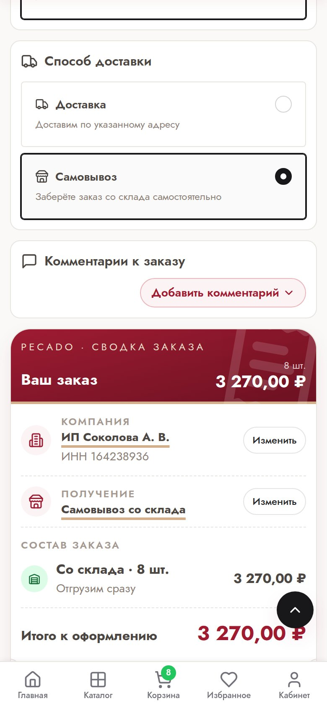
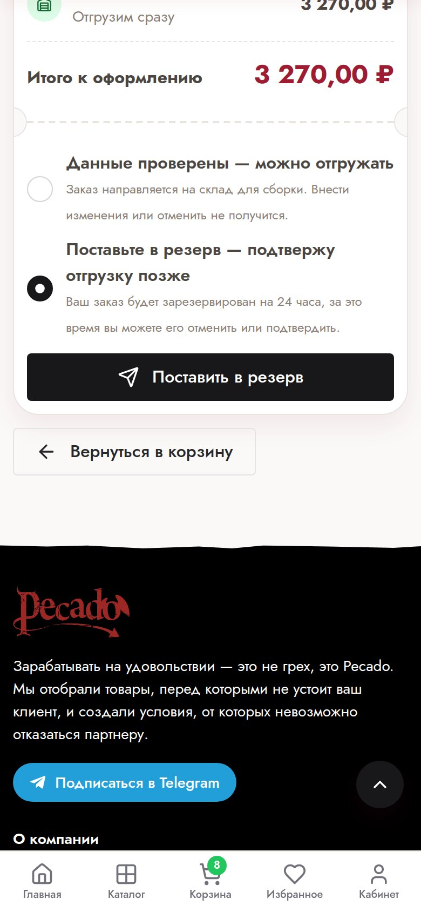
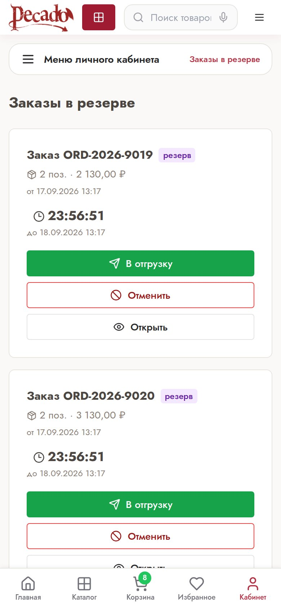
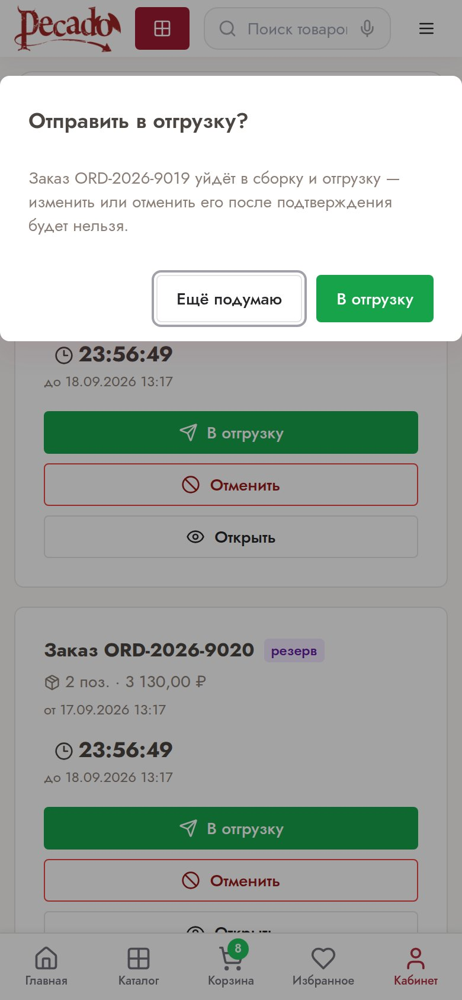
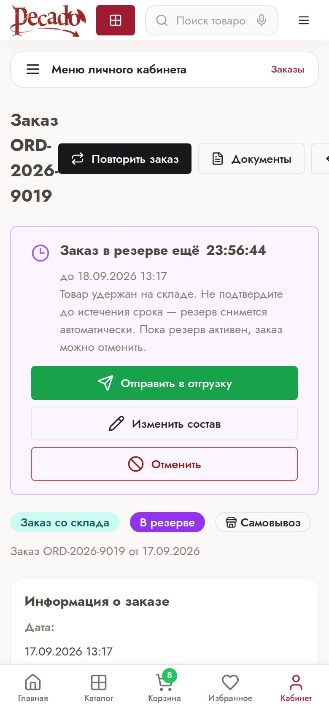

Покупатель позвонил вечером или в субботу — вы оформляете заказ, склад собирает его за 40 минут, курьер забирает. Без звонков менеджеру и без ожидания утра.
Спрос на наши товары выше всего вечером и в выходные. Маркетплейсы приучают покупателя к доставке за четыре часа. Теперь вы можете отвечать тем же — со своей ценой и своим сервисом.
Заказ, оформленный в 19:30, будет собран сегодня. Срочная доставка вечером — ваше преимущество, а не потерянный покупатель.
Раньше заказ пятничного вечера уезжал в понедельник. Теперь — в субботу утром.
Заказ сразу уходит на склад. Резерв, подтверждение, отмена, пропуск курьеру — всё в кабинете, в пару нажатий.
| Было | Стало | |
|---|---|---|
| Часы склада | Пн–пт, 9:00–18:00 | Пн–сб, 9:00–21:00 |
| Покупатель отказался | Звонок менеджеру, ожидание | Кнопка «Отменить» в кабинете |
| Готов ли заказ | Уточнять по телефону | Статус в кабинете и письмо «Собран» |
| Выдача курьеру | «Я от такого-то магазина» | Пропуск с QR-кодом, как в пункте выдачи |
Важно. Режим резервов включается для интернет-магазинов. Если в оформлении заказа вы не видите варианта «Поставьте в резерв», напишите своему менеджеру — подключим за один рабочий день.


Он закреплён за вами на 24 часа и не уйдёт другому покупателю. На склад в сборку заказ пока не попадает — ждёт вашего решения.
Выберите «Данные проверены — можно отгружать». Заказ сразу уйдёт на склад, шаг 2 вам не понадобится.
Через 24 часа резерв снимается сам. За три часа до этого мы пришлём письмо-напоминание. Снятый резерв — не штраф: товар просто вернётся в свободный остаток, а заказ закроется.



Нажмите «В отгрузку». Склад получит заказ сразу, без менеджера. После этого изменить или отменить заказ уже нельзя.
Нажмите «Отменить». Товар вернётся в остаток, звонить никому не нужно.
Откройте заказ и нажмите «Изменить состав»: можно уменьшить количество или убрать позицию. Добавить товар — новым заказом.
Раздел «Заказы в резерве» сделан под одну руку: оператору не нужен компьютер, чтобы отправить заказ в отгрузку сразу после разговора с покупателем. Таймер у каждого заказа показывает, сколько ещё товар закреплён за вами.
Ответ теперь виден в списке заказов: зелёная метка «Собран, ждёт выдачи». Рядом — сколько мест и с какого времени заказ ждёт.
После выдачи в заказе появится время и отметка склада. Удобно, когда покупатель спрашивает «где мой заказ», а курьер не берёт трубку.
Когда заказ собран, мы пришлём письмо. Обновлять страницу и звонить на склад не нужно.
Заказ, отправленный в отгрузку до 20:00, собираем и выдаём в тот же день. Отправленный позже — соберём первым делом на следующий рабочий день склада, к 9:40. Кабинет подскажет точное время ещё до того, как вы нажмёте кнопку. Последний час склад только выдаёт готовые заказы — курьеру нужно успеть до 21:00.
Заказы, не вошедшие в пропуск, останутся на складе и дождутся второго курьера. Перепутать невозможно: склад видит только то, что вы отметили.
По ссылке он видит адрес, часы и номера заказов — без цен и состава.
Нажмите «Отозвать пропуск» и выпустите новый. Старая ссылка перестанет работать сразу.
Три рабочих дня склада. Чем раньше заберёте, тем быстрее заказ получит покупатель.
Заезд через территорию института ВИСТИ. Ориентир — голубые двери и вывеска «ВИСТИ» на здании.
Воскресенье — выходной. Приезжайте до 21:00: после закрытия заказы не выдаём. Телефон склада: +7 (991) 584-33-90.
Если у магазина на складе лежат и другие заказы, они останутся ждать другого курьера. Так и задумано, спорить с кладовщиком не нужно — вопрос к магазину.
Попросите магазин прислать ссылку заново. Без пропуска кладовщик выдаёт заказ только после звонка в магазин — это дольше.
Для заказа, резерва, отмены и выдачи — нет. Менеджеры работают пн–пт с 9:00 до 18:00 и помогут с ассортиментом, условиями и спорными случаями. Вечером и в субботу они отдыхают — всё перечисленное в этом буклете работает без них.
Единственная причина — просроченная задолженность. Кабинет скажет об этом сразу при оформлении. Оплатите долг или свяжитесь с менеджером в его рабочее время.
Через 24 часа резерв снимется, товар вернётся в остаток. За три часа до этого придёт письмо. Оформить заказ заново можно в любой момент — кнопкой «Повторить заказ».
Нет: склад начинает сборку сразу. Поэтому и нужен резерв — держите в нём заказ, пока покупатель не подтвердил.
Заказ будет собран без него, а в карточке заказа и в письме мы покажем, чего не хватило. Вечером и в субботу замену не подбираем — это вопрос к менеджеру на следующий рабочий день.
Мы не выбрасываем собранное, но просим забирать в течение трёх рабочих дней: место на стойке выдачи ограничено.
Резерв, подтверждение, отмена, статус сборки и выпуск пропуска доступны через клиентский API и ИИ-агента. Документация — в кабинете, раздел «API».
Резерв и статусы сборки — да, для любых заказов. Пропуск нужен только для самовывоза.